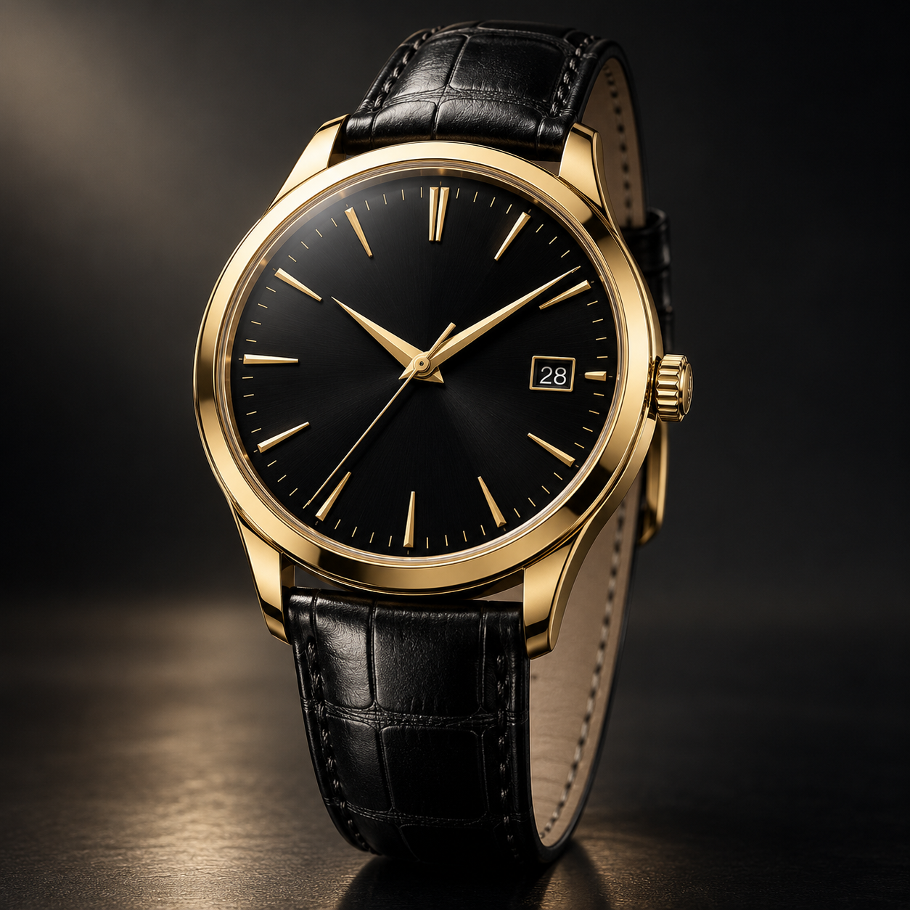
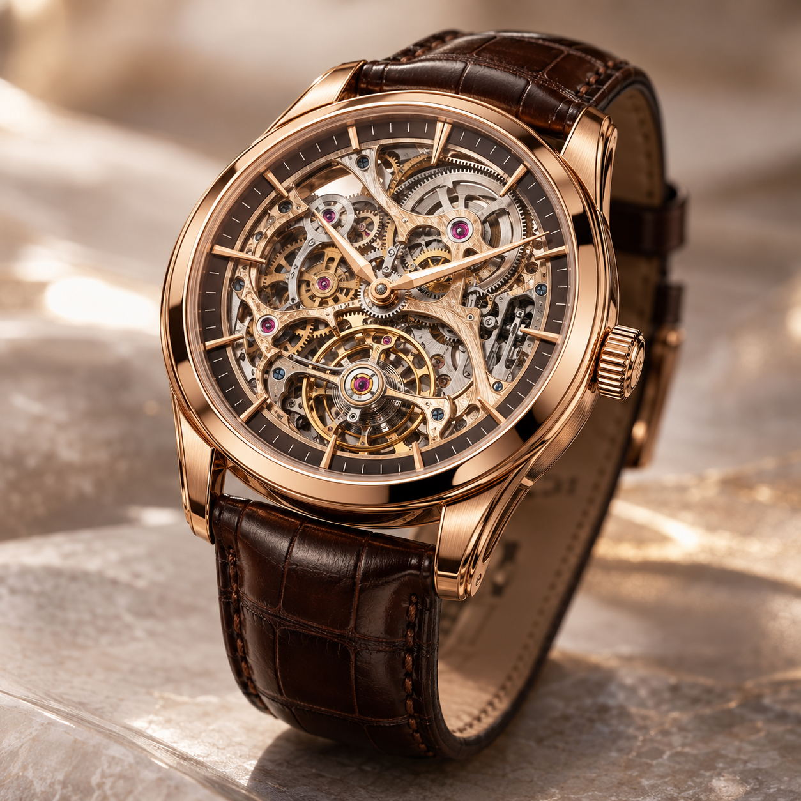

VÉRITÉ HORLOGERIE
Somos una marca que vende relojes 100% oficiales, nuevos o usados. Tenemos un catálogo único en el que se puede ver el estado de cada reloj mediante imágenes.
El arte de medir el tiempo
Un reloj no es simplemente un accesorio: es una pieza que combina diseño, precisión y personalidad. Desde los modelos clásicos hasta los deportivos, cada reloj tiene su propia esencia y está pensado para acompañar diferentes momentos.
En VÉRITÉ buscamos reunir piezas que destaquen por sus materiales, detalles y mecanismos, ofreciendo una selección donde la elegancia y la precisión se encuentran. Porque el tiempo pasa, pero el estilo permanece.
Mirá nuestra colección de relojes de alta gama
Aurelius Noir

Especificaciones:
Modelo elegante de estilo clásico, pensado para ocasiones formales. Cuenta con movimiento automático calibre AX-210 y una reserva de marcha de 72 horas. Su caja está fabricada en oro amarillo de 18 quilates, con un diámetro de 40 mm y un grosor de 9,2 mm. Tiene cristal de zafiro con tratamiento antirreflejo, esfera negra con acabado sunburst y correa de cuero negro. Incluye funciones de horas, minutos, segundos y fecha. Ofrece una resistencia al agua de hasta 50 metros y un peso aproximado de 92 gramos.
Precio ficticio: USD 12.900
ConsultarChronos Azure GT

Especificaciones:
Reloj deportivo de lujo con movimiento automático cronógrafo calibre CX-500. Posee una reserva de marcha de aproximadamente 60 horas. Su caja está fabricada en acero inoxidable 316L, con un diámetro de 42 mm y un grosor de 13,1 mm. Utiliza cristal de zafiro antirreflejo y presenta una esfera azul marino con acabado cepillado. Cuenta con brazalete de acero inoxidable y funciones de horas, minutos, segundos, cronógrafo y taquímetro. Tiene una resistencia al agua de hasta 150 metros y un peso aproximado de 178 gramos.
Precio ficticio: USD 9.800
ConsultarEclat Skeleton 01

Especificaciones:
Modelo de alta relojería con diseño skeleton, que permite observar gran parte de su mecanismo interno. Utiliza un movimiento automático calibre ES-88 con una reserva de marcha de hasta 80 horas. La caja está fabricada en oro rosa de 18 quilates y tiene un diámetro de 41 mm y un grosor de 10,8 mm. Cuenta con cristal de zafiro tanto en la parte delantera como en la trasera. Tiene correa de cuero marrón y componentes internos visibles con acabados decorativos. Incluye funciones de horas, minutos y segundos. Su resistencia al agua es de 50 metros y pesa aproximadamente 105 gramos. Es una edición limitada a 250 unidades.
Precio ficticio: USD 24.500
ConsultarSobre nosotros
Somos una relojería que se encarga de buscar los mejores relojes en el mejor estado para que nuestros clientes puedan obtener lo que desean con una buena relación precio-calidad. Partiendo del principio "La confianza lo es todo", construimos lo que hoy es VÉRITÉ HORLOGERIE: un lugar en el que tu reloj y tu dinero están en buenas manos.
Contactanos
+54 9 11 1111-1111